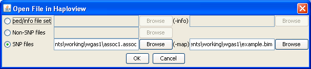

|  |
Launching HaploviewThere will now appear an Open in Haploview menu option by assoc1.assoc when right-clicking. Selecting this option will open this dialog. There are three types of file sets that can be opened in Haploview: ped/info filesets, SNP/map and non-SNP (default). If a file is opened in Haploview from the operations tree then the file set is filled in automatically based on the other files in that operation, otherwise the file set must be completed manually. For example, in this case we opened assoc1.assoc from the operations tree thus the corrisponding map field is filled in with example.bim, the input file for the assoc1 operation. If we were instead to open this file from the folder viewer then the map field would not be filled in and we would have to do this manually.Previous | Next |